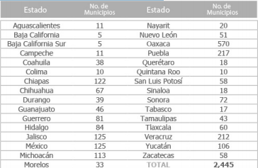
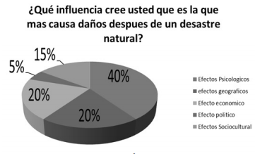

Mostrar a los alumnos en una cartulina o papel bond, lo siguiente:

Realizar diversas preguntas al respecto, por ejemplo: ¿Cuántos estados tiene nuestro país?, ¿Qué estado tiene más
municipios?, ¿Cuál estado tiene menos municipios?, ¿Cuántos municipios tiene el estado donde viven?, ¿Qué estados tienen
casi la misma cantidad de municipios?, ¿Cuál es el total de municipios que tiene nuestro país?
1. Mostrar una gráfica como la siguiente:

Realizar algunas preguntas a los alumnos respecto a la gráfica para extraer la información explícita e implícita.
Hacer un análisis a conciencia sobre las características e información que contienen la gráfica.
En estas actividades se pretende que el alumno rescate información y conteste preguntas relacionadas con las gráficas.
Revisar el desafío #34 en el cual los alumnos reunidos en parejas buscarán información en una gráfica de barras al
contestar preguntas y rescatar características explícitas e implícitas contenidas en ella.
Revisar las respuestas de manera grupal para socializar los resultados.
Dejar a los alumnos que investiguen más gráficas de diversos tipos. Reunir en equipo para que elaboren 5 preguntas con
base en las gráficas e intercambiarlas a otro equipo para que las contesten.